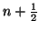
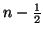
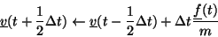
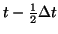
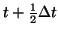

The standard Verlet Leapfrog algorithm first generates new velocities at timestep

from the velocities at timestep
and the forces on all atoms as follows:

Then the positions of all atoms are advanced one timestep based on the new velocities:
The tempurature of the system at time  is then calculated as the
average of the temperatures of the system at timestep
is then calculated as the
average of the temperatures of the system at timestep

and
.The initial velocities for the system can optionally be provided by the user in the input file, however if they are not the program asigns randomly oriented velocites to each of the free atoms in the system based on the given system temperature, ensuring that the total translational and rotational angular momentum of the system is zero.